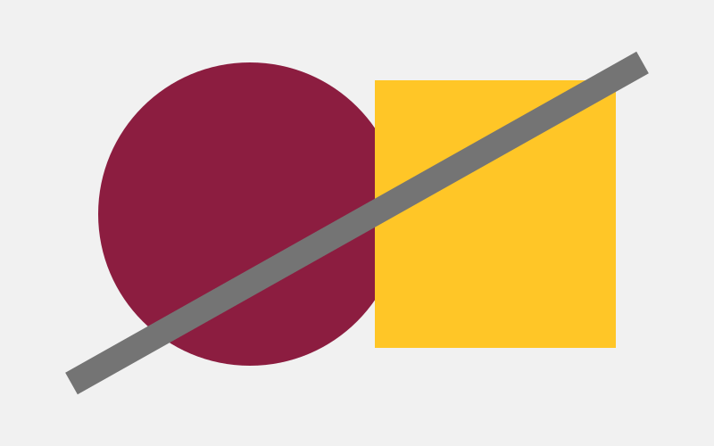

Rounded baseline
Clipped enhancement

Editorial wrap
Accessible design depends on making careful choices about how content is presented. Visual treatments can add interesting parts to a page while still keeping the information readable and organized for the viewer. In this example, the image creates an editorial shape that allows the surrounding text to follow its edge instead of a standard rectangular boundary.
The shaped treatment is used only when enough space is available for comfortable reading. At smaller widths, the layout returns to its simpler default presentation so the text remains clear and easy to follow.
Choice rationale
The rounded treatment is providing a simple baseline that stays readable without having to code in advanced CSS support. The clipped treatment adds visual interest but only to the decorative image while keeping its caption and meaning available. The editorial wrap uses the portrait shape to create a more magazine like text flow at wider widths, while smaller screens return to the simpler layout for readability.
Support record
| Feature | MDN link | Date checked | Fallback result |
|---|---|---|---|
| border-radius | MDN border-radius | September 15, 2026 | Widely available. Without the treatment, the content is still readable in a rectangular box. |
| clip-path | MDN clip-path | September 15, 2026 | Widely available. Without the enhancement, the complete rectangular image stays visible. |
| shape-outside | MDN shape-outside | September 15, 2026 | Widely available. Without the enhancement, the text follows the image's normal rectangular boundary. |
AI Disclosure
I used ChatGPT for help with the CSS shape suggestions, browser support testing, and troubleshooting. I attempted to troubleshoot the shape outside treatment at the wider breakpoint, but was not able to consistently verify it in Chrome DevTools because the effective viewport width did not match the responsive width shown. I verified the other page behaviors through browser testing and reviewed MDN documentation for compatibility information.